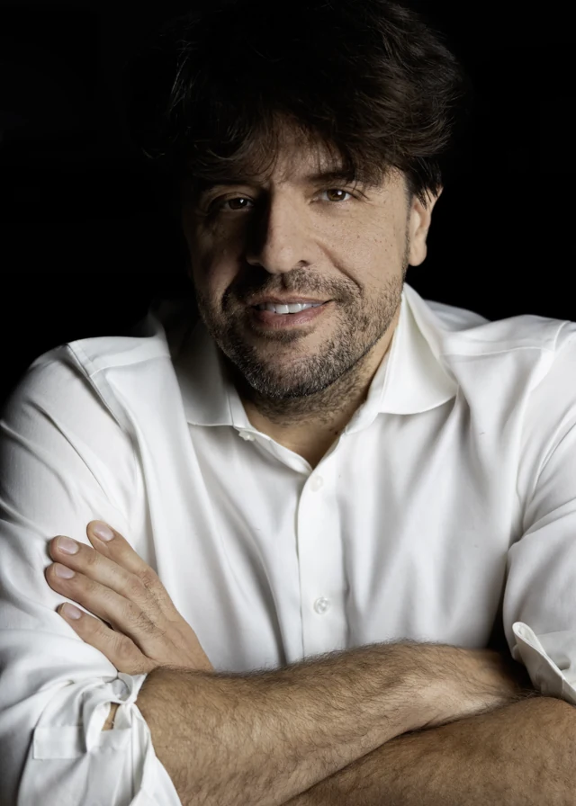

这样的工作，让你有劲
关注可推广的机制；喜欢实验、数据与技术；愿意探索结果尚未确定的问题。
工作的一天
提出假设、查文献、做实验或建模型、面对负结果、迭代解释。
值得试试的职业道路
院内主路
医院科研专岗、医院实验室、基础与转化研究
可以先练：机制知识、实验或计算训练、可重复性。
其他入口
高校研究所、药企早期研发、生物技术公司
可以先练：领域基础、研发流程、模型与实验对应。
交叉探索
转化研究、早期药物研发
可以先练：疾病需求、靶点与干预证据、开发流程。
认识一位走过这条路的人

把喜欢，放进真实工作里
好奇心可能使方向越铺越大；要聚焦可证伪问题，完整记录负结果和方法边界。
下个月，先试这一件
选择一个公开机制问题，列出竞争解释、关键对照、可能的负结果和下一步。
也可以看看：CODE：偏数据与模型研究；LINK：偏临床问题与转化。